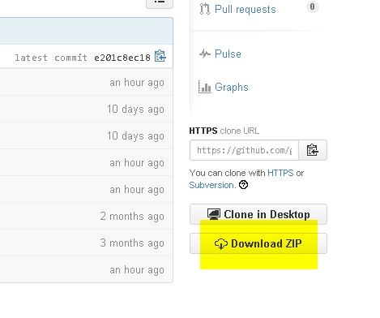
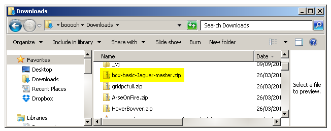
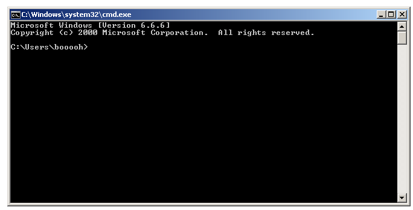

|
|||||
| raptorBASIC+ | rB+
commands |
rB+
tutorials |
working
with rB+ |
contact |
links |
| rB+ tutorials :: 0.1 - getting set up and ready to build |
You've read tutorial 0 and
think this rB+ thing might be a bit of fun. So where to next?
Before you start playing around and have that GPU throwing your sprites here, there and everywhere and the Object Processor flexing its muscles rendering your scenes, you're going to want to grab the package. So click the raptorBASIC+ link and obtain the files from one of the sources. The installer is the easiest and recommended option. Run, follow the prompts, job done - all you then need to do is right-click the project's .rbplus file and a menu will give you the various build options. Double click the .rbplus file to build an ABS and send to Virtual Jaguar. You can also set up Notepad++ to allow building via a keypress. If you do not wish to use the installer for some reason, GitHub and Bitbucket options are still available. The installer is the method that provides the best functionality and the one we suggest you use, therefore, documentation for the older methods of download/install/use are no longer going to be maintained, so the following may not provide a full and clear picture of what is required. You are strongly advised to simply use the installer. And with that said... all hope abandon ye who enter here... If you chose Bitbucket as the source for your download, the download link should have been pretty much the only thing greeting you. If you chose GitHub it's not quite as obvious. Look over to the lower right, you'll see something like this: 
The yellow highlighted
"Download ZIP" is what you're looking for. Click that and the rB+
archive will be downloaded.
Whichever option you chose for download, the next step is to decompress the rB+ package somewhere sensible. So open up your downloads directory and locate the file: 
The GitHub one looks like the
file in the image above, the Bitbucket
one will look more like "ggnkua-bcx-basic-jaguar-abcd1234wxyz.zip".
Right click on the file and choose "Extract All...". Think carefully
where you want to put rB+ because you're going to have to navigate to
it via the command line in future. For that reason, it's not a bad idea
to put it somewhere not too deeply nested. There's nothing easier to
navigate to than C:\ but the choice is yours.
Windows being Windows, it's possible you'll get an alert regarding permissions. Do whatever you have to do to put your files where you want them and don't let Windows bully you. Once the files are unpacked, it's time to rename that ugly-looking directory to something altogether more sensible - "rbp" or "basic" or whatever makes sense to you. We'll assume "basic" from now on. Right click it, select "Rename" and type your friendlier name. And that's rB+ set up and ready to go... ...so how do you actually "do it"? Building rB+ projects isn't difficult, you only have to type a simple command into the Windows command prompt and the project will build and run either with the included copy of Virtual Jaguar, or directly on your Jaguar via the skunkboard. If that's something you've never done before, follow these steps: Click "Start", locate the little search box, type in "cmd" and hit enter. Windows will highlight cmd.exe, you only need click on it or hit return and you'll get the command prompt to appear on screen: 
Now type: cd
c:\basic
(or replace the directory name
with whatever happened to be your choice
of name) and you're in the right place to build rB+ projects.
Here's how you build a project and run it in Virtual Jaguar: build
nyandodge
This will build the nyandodge sample game project. Or if you prefer to send directly to the Jaguar via the skunkboard: build
nyandodge sendy
Both the above examples build a
BJL-style binary. If you would rather create a ROM, the equivalent
commands are:
build
nyandodge ROM
and build
nyandodge ROM sendy
Sending a ROM to your
skunkboard will perform the usual erase/write cycle.
When you wish to begin your own project, there's a couple of things to keep in mind. All projects live in the PROJECTS directory. If you wish to have a project called "kaboom", you'd need a project directory named "kaboom" and inside that a BASIC file named "kaboom.bas". All rB+ projects follow this layout. There are a number of ways to begin a new project. You can either copy an existing project and rename both the directory name and the .bas file manually, or you can have the rB+ build script create a fresh empty projects based on a template. Here's an example of creating a project called "kaboom" from the template: build
kaboom new
That will copy the template,
rename the directory to kaboom and rename the .bas to kaboom.bas as
well.
<< rB+
tutorials :: 0 for the absolute
beginner << So now you're armed with the knowledge to:
If you're at all experienced with BASIC or other lower level programming languages, you might now wish to open some of the projects up and fiddle with a few things and see how they work before getting into the rB+ sepcifics of asset and sprite definitions and management. If that seems too soon, continue reading the tutorials and take things as slowly as you need to. |